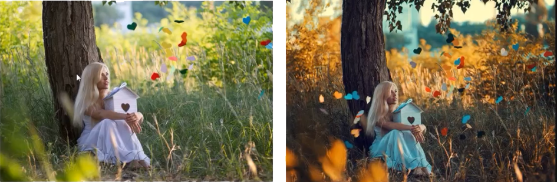

Обработка
Обработка фотографий
Фоторедактор. Фотография должна передавать ощущения, которые были при ее съёмки. В этом и поможет фоторедактор.
Photoshop Lightroom и Luminar - Наше всё!
Adobe Lightroom
Create Library (after install). Catalog -> All photographs -> ПКМ -> Import photos and videos -> Source -> Import. Then this catalog will appear in Folder directory.
Photo folder - Library -> Expand directory
Обновление библиотеки (актуально при добавлении новых) - Folder -> Choose folder -> ПКМ -> Synchronize folder -> Synchronize
Add rating (0-5 keys) - Library -> Collection -> Five stars
Export - Select images -> ПКМ -> Export -> Export
Develop - Edit image
Luminar 4
- ДОБАВИТЬ ДИРЕКТОРИЮ С ФОТО: После установки нажимаем на + -> Добавить папку с изображениями
- ПРОСМОТР RAW: Просмотр -> Пары RAW и JPEG -> Только RAW
- AI: AI-коррекция, AI-структура
Photoshop
1. Экспозиция
Типичная проблема при на фотографием с солнцем - сильно яркое небо, темная земля. Нужно прорисовать детали.
Можно использовать Регулируемый градиент для обработки экспозиции.
Тени (shadows) сделать светлее, убрать засветки (highlights). Смотреть на гистограмму и экспонометр.
2. Цветокоррекция
Коррекция насыщенности цветов. Если какой-либо цвет сильно выбивается или наоборот его не хватает, то нужно это отрегулировать. цветовой насыщенностью - Vibrance +/-.
Одна из главных задач по цветокоррекции - ВЫДЕЛИТЬ ГЛАВНЫЕ и УБРАТЬ ЛИШНИЕ цвета.
Также можно использовать цветокоррекцию для замены цвета вообще - для изменения атмосферы кадра.
- Автоподгон цветов на различных фотографиях
PS -> Изображение -> Коррекция -> Подобрать цвет (Выбираем источник и настраиваем). Можно назначить гор. клавишу (Редактирование -> Клавиатурные сокращения) Ctrl+Shift+Q
- Ручная настройка
PS -> Изображения -> Коррекция. В этом случае БУДУТ изменены пиксели исходной фотографии.
Корректирующие слои (лучше с помощью них!)
В PS лучше делать все настройки там, чтобы было всё наглядно + можно использовать непрозрачность слоя и эти слои можно перетаскивать на другие изображения. В этом случае НЕ БУДУТ изменены пиксели исходной фотографии.
- Яркость\Контрастность (Можно нажать на АВТО)
- Цветовой тон\Насыщенность (Выбираем нужный цвет, который нужно усилить, ослабить или перекрасить c помощью инструмента руки -> настраиваем)
- Выборочная коррекция цвета (ручная коррекция)
- Слой-заливка - ЦВЕТ
3. Техническая ретушь в PS
Удаление лишних объектов с фона, чтобы акцент был только на основном объекте в кадре (Убираем лишнее, выделяем главное).
Заплатка (J) Делаем копию слоя (Ctrl + J) Выделяем нужную область -> Передвигаем в ту часть, которая больше подходит для замещения После заплатки могут остаться видимые края, их можно почистить той же заплаткой
Штамп (J) Нажимаем ПКМ -> Выбираем кисть и жёсткость (жёсткость лучше небольшую) Выбираем область для клонирования (зажатый Alt) Штампуем
Точечная восстанавливающая кисть (J) Хорошо подходит для удаления мелких деталей (прыщей, родинок, логотипов на одежде и т.д.) Просто выделяем то, что нужно удалить
Пластика (Фильтр -> Пластика) Можно изменять геометрию черт лица Также можно исправлять геометрию различных фигур Расширенные настройки -> Инструмент Палец (Нажим и плотность делаем 20)
4. Коллажирование
Создание одного изображения из нескольких отдельных
- Картинки должны быть едиными по стилю
- Нужно добавлять размытие, шум и тень, если картинка находится не в фокусе
- РАЗМЫТИЕ: Фильтр -> Размытие -> Размытие по Гауссу
- ШУМ: Фильтр -> Шум -> Добавить шум
- ТЕНЬ: Эффекты -> Тень
5. Двойная экспозиция
Совмещение в одном кадре несколько объектов и действий, в реальности расположенных в разных местах и происходящих в разное время
- Обтравить изображение пером
- ПКМ -> Выделение области
- Выделение -> Выделение и маска (Refine Edge, Alt + Ctrl + R)
- Прозрачность 100%
6. Прочее
- КАДРИРОВАНИЕ
- ВИНЬЕТИРОВАНИЕ - выделяет важные детали.
- УДАЛЕНИЕ ПЫЛИ
Жизненный цикл фотографии
I. Съёмка кадра на фотоаппарат в raw-формате
II. Перенос фотографий с камеры на компьютер (Экспорт)
III. Проявление raw-файлов
На этом этапе нужно сделать первичную обработку raw-файлов, это также называется "проявить raw" (цифровой негатив).
Где можно проявлять:
- Camera RAW (встроенный плагин в Photoshop) - больше подходит для точечного редактирования с последующей обработкой в Photoshop
- Lightroom - подходит для массового редактирования
Контраст и яркость
общий КОНТРАСТ (динамический диапозон). Делается ползунками Whites and Blacks, нужно смотреть на гистограмму, чтобы она была распределена по всей ширине, если она не доходит до каких-либо краёв, то нужно это регулировать
общая ЯРКОСТЬ (вытягивание деталей из черноты и пересвета). Ползунок Exposure (экспозиция).
Цветокоррекция
цветовой БАЛАНС (цветокоррекция). Ползунки Temperature и Tint. Лучше смотреть на то, чтобы в кадре было максимально возможное кол-во цветов. Можно на время цветокоррекции ставить ползунок Vibrance на максимум, чтобы было более заметно различие.
детальные ЦВЕТА. Ползунки Highlights (корректируем чисто светлые), Shadows (корректируем чисто тёмные).
добавить объёма/резкости. Ползунок Clarity. Но лучше им сильно не увлекаться.
Ползуноки Color Mixer позволяют делать цветокоррекцию. (Hue - цвет, Saturation - насыщенность, Luminance - яркость). Здесь есть крутой функционал "Targeted adjustment tool". Часто прорабатывают небо таким образом.
IV. Обработка
Можно нажать на "Open" и откорректированное фото будет уже открыто в Photoshop.
Можно добавить резкость Filter --> Sharpen --> Unsharp mask